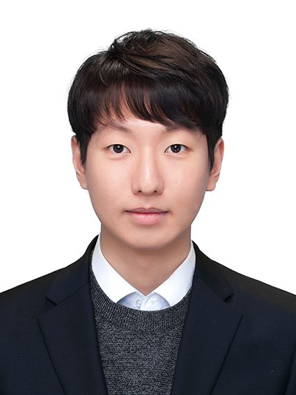
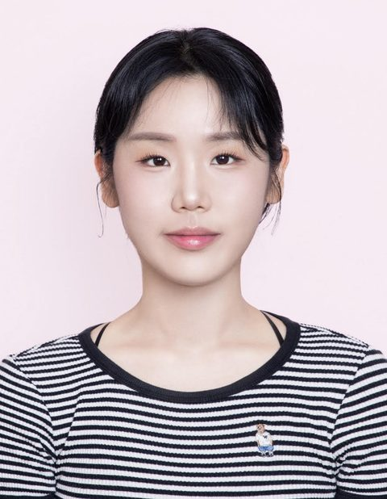
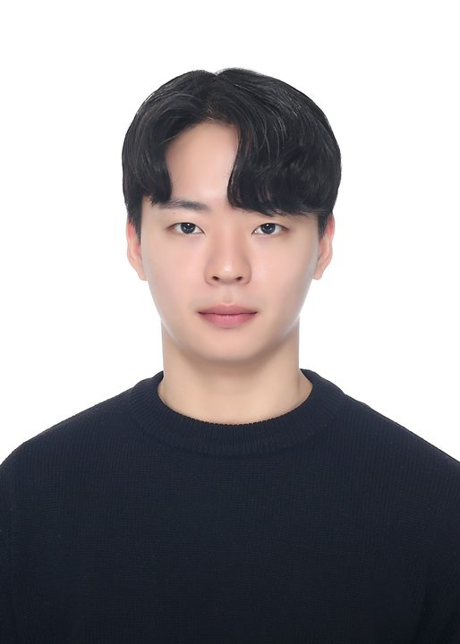
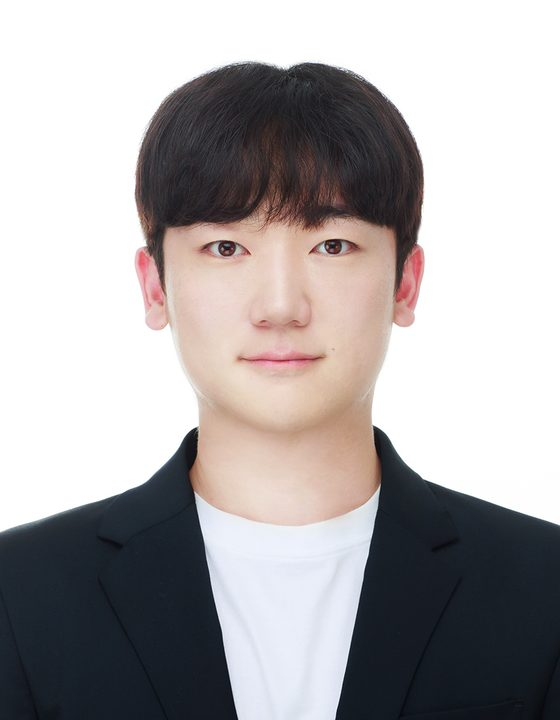
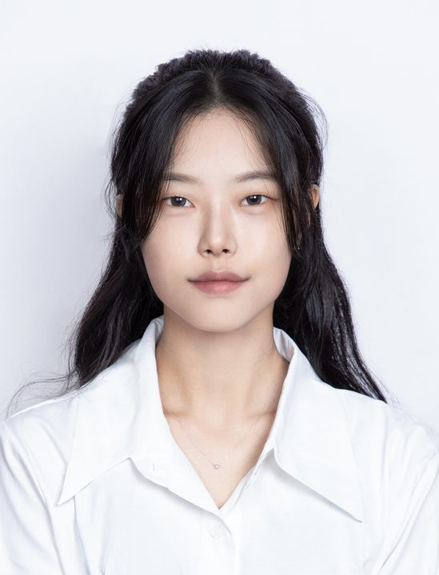
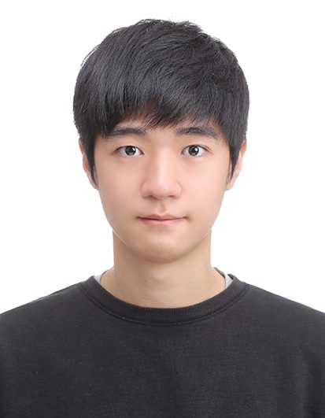

Members
Professor Jinhyuk Bhin and a team of 12 working across genomics, transcriptomics and data science.
빈진혁Jinhyuk Bhin, Ph.D.
Principal Investigator. Assistant Professor, Department of Biomedical Systems Informatics, Yonsei University College of Medicine
Career
- 2023.3 – present
- Assistant Professor, Department of Biomedical Systems Informatics, Yonsei University College of Medicine, Seoul
- 2017.1 – 2022.12
- Postdoc, Division of Molecular Carcinogenesis, Netherlands Cancer Institute, Amsterdam
- 2016.3 – 2016.12
- Postdoc, Institute for Basic Science, DGIST, Daegu
Education
- 2010.3 – 2016.2
- Ph.D., Department of Chemical Engineering, POSTECH, Pohang
- 2006.3 – 2010.2
- B.S., Department of Chemical Engineering, Sungkyunkwan University, Suwon
Postdoctoral researchers
-
Postdoc

Yoseob Lee이요섭
ProjectTranscriptome analysis on metabolic syndromes (gallbladder cancer, MASLD)
- 2024.3 – Postdoc, Yonsei University
- 2017.3 – 2024.2 M.S.–Ph.D. in Biomedical Science, Yonsei University
- 2013.3 – 2017.2 B.S. in Biochemistry, Yonsei University
-
Postdoc

Yeji Kim김예지
ProjectDevelopment of AI-based multimodal biomarkers to optimize immunotherapy in early-stage triple-negative breast cancer
- 2026.3 – Postdoc, Yonsei University College of Medicine
- 2024.3 – 2026.2 Postdoc, NYU Grossman School of Medicine
- 2018.9 – 2024.2 Ph.D. in Statistics, Korea University
- 2013.3 – 2017.2 B.S. in Information & Statistics, Dongduk Women’s University
Students
-
M.S.–Ph.D. student
Hyungsuk Kim김형석
2023.9 – M.S.–Ph.D.
ProjectSpatial transcriptomics analysis to understand the tumour microenvironment (bladder cancer, endometriosis)
-
M.S.–Ph.D. student

Jebin Lee이제빈
2023.9 – M.S.–Ph.D.
ProjectCharacterization of the tumour microenvironment using multi-omics analysis (colorectal cancer, gastric cancer)
-
Ph.D. student
Eunyoung Seo서은영
2024.3 – Ph.D.
ProjectStatistical and AI-based models for identifying driver structural variants in WGS data
-
Ph.D. student
Hyeonjin Moon문현진
2024.3 – Ph.D.
ProjectGene alteration analysis of WGS data in pan-cancer
-
M.S.–Ph.D. student

Sejung Lee이세중
2024.3 – M.S.–Ph.D.
ProjectCancer evolution analysis leveraging whole-genome sequencing (breast cancer)
-
M.S.–Ph.D. student

Jisoo Kim김지수
2025.3 – M.S.–Ph.D.
ProjectUnveiling extraoral taste receptors through single-cell analysis
-
M.S.–Ph.D. student
Junghyeok Lim임정혁
2025.9 – M.S.–Ph.D.
ProjectTracing relapse and invasion lineage with long-read sequencing (breast cancer)
-
M.S. student

Siyoon Park박시윤
2026.3 – M.S.
ProjectMapping the core programs underpinning lymph-node metastasis in HR+ breast cancer with in situ single-cell spatial transcriptomics
-
Undergraduate researcher
Sojung Yoon윤소정
Staff
-
Big Data Engineer
Myeongkeon Hwang황명건
ProjectBio-big data infrastructure management, AI-driven modeling research, and Advanced Omics Hub program management
- 2025.10 – Big Data Engineer
Undergraduate interns
- Sooyeon Park박수연
- Soyoon Park박소윤
- Seungwon Cho조승원
- Yongjun Bae배용준
- Jaeyoon Lim임재윤
- Sumin Shin신수민
- Sejon Kim김세존
Alumni
Our first alumni will be listed here.